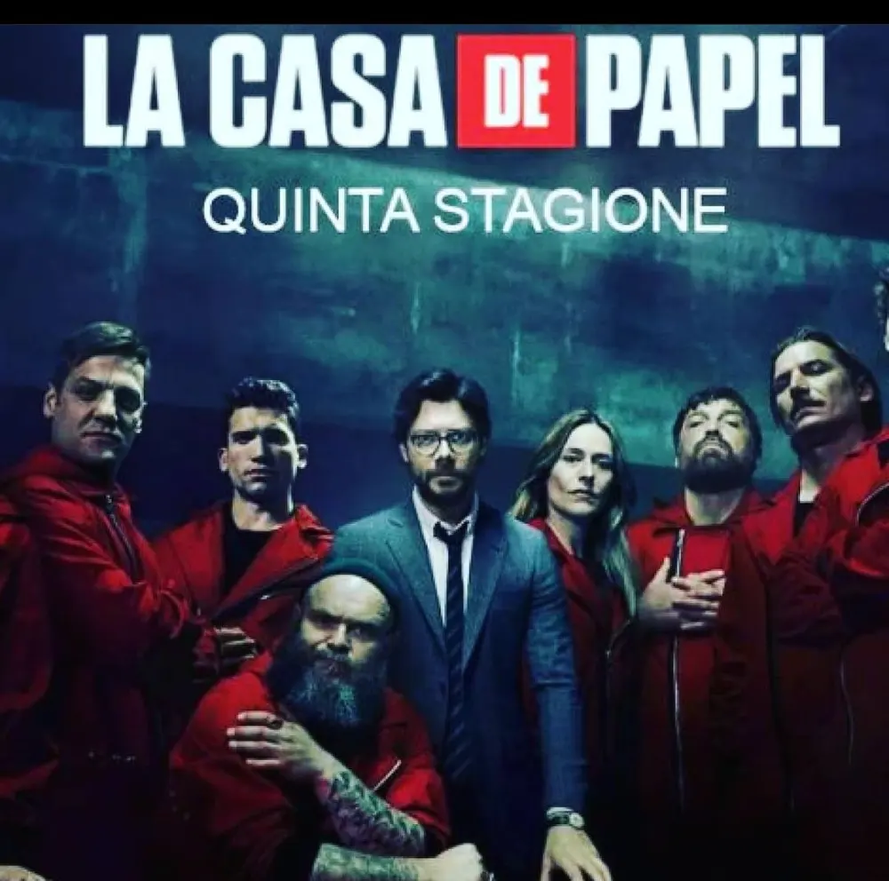
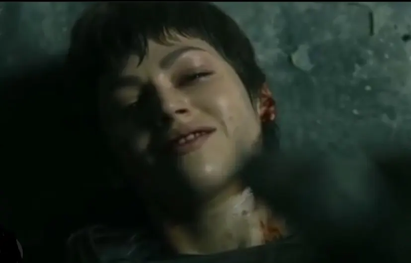

La casa di carta 5 secondo me (spoiler)
L'altro ieri è uscita la prima parte della 5^ (quinta) stagione de LA CASA DI CARTA.
Inutile dire che subito ci siamo precipitati sul divano, Netflix e messo play.

Ci siamo sparati tutte le cinque puntate in una sola serata, tutte perché volevamo capire come finiva, come avevano pensato di portare avanti questa rapina alla banca.
Beh, vi dirò la prima impressione a caldo: negativo!
Da una rapina si è passati ad una carneficina.
Un mare di proiettili, bombe a mano, militari, poliziotti e chi più ne ha più ne metta.
Tutto per sventrare una rapina che dopo un po' si è dato il via ad una guerriglia e si è abbandonato l'obiettivo dei ladri: l'oro!
Insomma, una vera e propria sparatoria senza freni.
Tante sono state le scene di flashback fatti apposta per riempire spazi vuoti a questa prima parte dell'ultima stagione del la casa di carta, forse per dare un senso ad una ormai noiosa sparatoria.
Per non parlare dei momenti di discorsi sentimentali tra un pallottola e una bomba.
Militari che non sanno nemmeno più loro, secondo me, il senso dell'intrusione in questa banca tant'è vero che ognuno inizia a farsi guerra per fini personali come Gandìa con Tokyo, artefice, nella quarta stagione, della morte di Nairobi.
La morte inutile di Tokyo
Il colpo di scena di questa stagione forse, è la morte di Tokyo che, pur non facendosi piegare dalle forze dell'ordine e catturare, si fa esplodere insieme a loro e a quanto pare uccidendo anche l'odiato Gandìa.

Una morte che poteva essere evitata nel momento in cui si è perso più tempo a raccontare i momenti romantici e nostalgici con Rio, piuttosto che armarsi, insieme allo stesso Rio, per difendersi dall'imminente intrusione dei poliziotti, ed invece...
Praticamente una cosa oscena!
Il tutto incorniciato dalla scena della poliziotta Alicia Sierra che scopre il nascondiglio del Professore.
Dopo averlo legato però, le si rompono le acque e si vede costretta a partorire con l'aiuto del Professore stesso.
Linguaggio fuori luogo
Ma vogliamo dire qualcosa per quanto riguarda sotto il tendone delle forze dell'ordine?
Un linguaggio del tutto sboccato e senza senso, continue contraddizioni e illegalità per emergere fino ad esclamare una frase fuori luogo come "me lo hai fatto venire duro".
Non si è capito il senso di tale espressione da parte del colonnello Tamayo.
Una quinta stagione più deludente della quarta, purtroppo si è passati da una serie tv di successo ad una telenovela spagnola di tutto punto.
I nuovi personaggi de La Casa di Carta
In ogni stagione la banda ha reclutato nuovi membri, questa stagione non è entrato nessuno nella banca (per il momento, perché non ci dimentichiamo che è solo la prima parte della quinta stagione che abbiamo visto).
Ma fuori dalla banca, altri flashback ci portano da Berlino e un figlio che non abbiamo mai sentito parlare.
Un personaggio come Berlino, in cinque stagioni, ci ha raccontato parecchi aneddoti della sua tortuosa vita, tra amori, malattia, amici e rapine ma mai aveva accennato ad un figlio.
Ed invece, in queste puntate de la casa di carta, se ne parla sin da subito e ci fa sapere che è un ingegnere informatico di 31 anni, che Berlino 'recluta' per una rapina con alcuni componenti della banda e sua moglie Tatiana.
Che l'introduzione di questo figlio sia un modo per farci sapere che, nell'ultima parte della quinta stagione, il ragazzo darà una svolta alla rapina?
Non ci resta che aspettare dicembre per capire a cosa e come servirà questo personaggio.
Un altro personaggio che nemmeno era mai stato accennato, è l'ex fidanzato di Tokyo. Si, tra i continui flashback, Tokyo parla tutto il tempo di Renè, il fidanzato ucciso dopo una rapina fatta insieme in una banca. La stessa rapina che le è stata decisiva per la scelta da parte di Berlino e del Professore per reclutarla nella banda alla prima rapina.
Alla fine della fiera di questa stagione non si salva quasi niente, non segue più il senso della storia e non ha nemmeno logica.
Purtroppo il mio giudizio è un deludente 3.
3 perché sono affezionata alle prime 2 stagioni altrimenti sarebbe ancora più basso.
Per mettere un punto conclusivo aspetto l'ultima parte che uscirà il 3 dicembre 2021, con la speranza che introdurranno colpi di scena sconvolgenti per rivalutare questa serie tv, ma ho i miei dubbi!